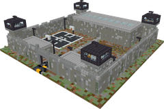
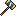
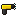
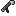

The Warden
BOSSCAN INFECTThe prison warden, 1.7 times bigger than a zombie. He stuns you with his baton, shuts down every gadget and electric fence around him and throws itchy gas at anyone who keeps their distance.
Its lair: Prison Yard

It waits in its lair and wakes up when you step onto the arena floor. Fight in the yard. Your guidebook radio leads you there. All the lairs →
Boss bar
Shown over its head during the fight, in its own theme.
Attacks
A heavy swing (3.3 blocks) that stuns you for 1.5 s.
9 dmgBlows his whistle: every gadget within 14 blocks (decoys, sensors, projectors...) stops for 15 s and every powered electric fence is switched off. At most every 20 s.
no dmgThrows a gas canister 4 to 14 blocks away. The cloud lasts 6 s (3 blocks wide), blinds you for 3 s and slows you down hard for 4 s. At most every 8 s.
1 dmg/sWhistles for 2 team members every 27 s (never more than 6 around him).
x2Armor
Normal damage: no armour. His bite can infect you.
 Riot Cop
Riot Cop Convict Brute
Convict Brute The Thief
The Thief Zombie Hound
Zombie HoundLoot
Every player who hurt it gets their own loot in their inventory: 20 to 30 scrap, 1 jackpot and 2 different bonus items. 25% chance that a weapon comes upgraded (a random mod, or Reinforced III).
Jackpot (1 of)

Thunder Hammerx1
Taser Gunx1Bonus (2 of)

Net Launcherx1 Electric Bombx3
Electric Bombx3 Electric Cablex1
Electric Cablex1 First Aid Kitx1
First Aid Kitx1- Do not build your defence on traps or gadgets: his lockdown switches them off.
- Stay close enough to avoid the gas, but step back after each baton swing: the stun is short.
- Kill the Riot Cops first, their shields block your shots.